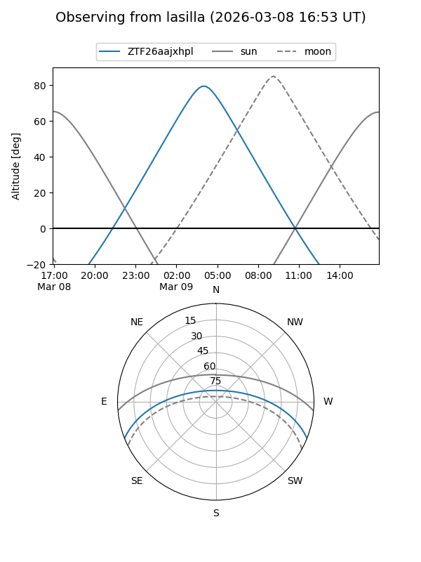
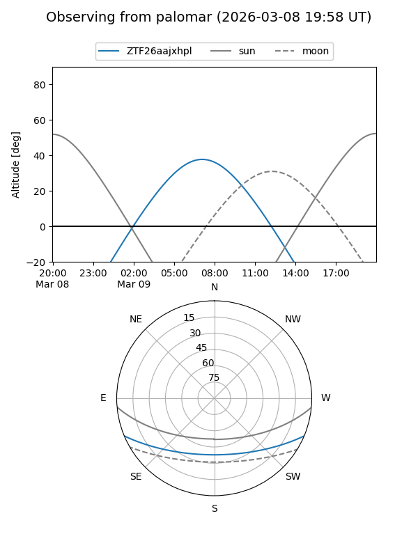

ZTF26aajxhpl
Target ZTF26aajxhpl at 2026-03-09 06:54
Aliases and brokers:
FINK: link
Lasair: link
ALeRCE: link
alt names
ZTF26aajxhpl (ztf,fink_ztf)
Coordinates:
equatorial (ra, dec) = 156.0800,-18.71699
equatorial (HMS+DMS) = 10:24:19.20,-18:43:01.16
galactic (l, b) = (261.0086,+31.92522)
Flags:
Photometry:
last ztfg=19.72
1 ztfg detections
Lightcurve
Visibility


Additional plots